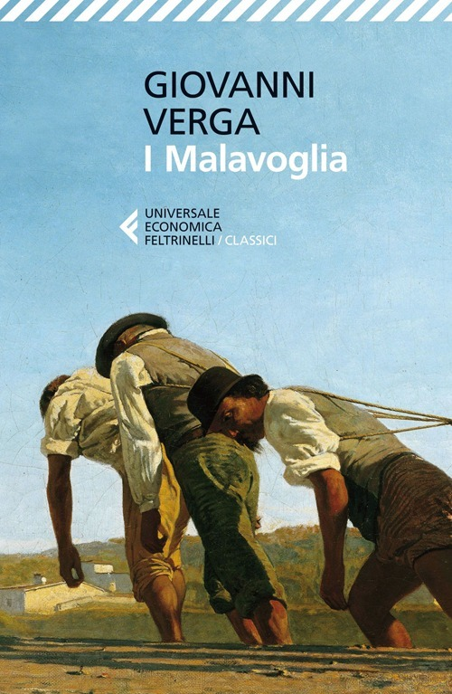

I Malavoglia di Giovanni Verga
Sinossi
I Malavoglia è il titolo del romanzo più conosciuto dello scrittore siciliano Giovanni Verga, pubblicato a Milano dall'editore Treves nel 1881. Il romanzo narra la storia di una famiglia di pescatori che vive e lavora ad Aci Trezza, un piccolo paese siciliano nei pressi di Catania. Il romanzo ha un'impostazione corale, e rappresenta personaggi uniti dalla stessa cultura ma divisi dalle loro diverse scelte di vita, soverchiate comunque da un destino ineluttabile. Lo scrittore adotta la tecnica dell'impersonalità, riproducendo alcune caratteristiche del dialetto e adattandosi quanto più possibile al punto di vista dei differenti personaggi, rinunciando così all'abituale mediazione del narratore. L'opera va inserita nel Ciclo dei vinti, insieme a Mastro-don Gesualdo e a La Duchessa de Leyra, opere che affrontano il tema del progresso, visto dal punto di vista degli "sconfitti" di ogni strato sociale. La Duchessa de Leyra rimase solo abbozzato, mentre altri due romanzi previsti nel Ciclo (L'Onorevole Scipioni e L'uomo di lusso) non vennero neppure iniziati
Scarica PDF